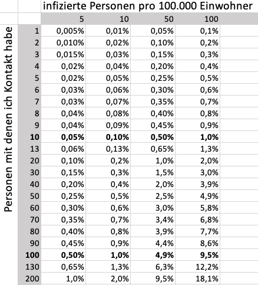

In early 2020 the SARS-CoV-2 virus (colloquially known as the coronavirus) spread across the globe and caused a pandemic of COVID-19 disease. This page displays a collection of daily updated charts of disease spread in German regions and in selected countries. The focus lies on displaying the data of the past and deriving trends for the near future. In order to compare data of different regions, the data is scaled by the regions' population. Charts are updated daily in the morning (UTC). Raw data and plot scripts are available in my GitHub repository.
Data sources
Feel free to drop me a message if you find a typo, bug or bigger issue. I am happy for inspirations for further analyses as well.
Stay safe, Torben
Grafik anklicken um zur Animation zu gelangen.
|
|
|
|
|
|
In der folgenden Grafik ist als Zeitverlauf die Anzahl der deutschen Land- und Stadtkreise aufgetragen, die COVID-19 Neu-Infektionen in der letzten Woche vermeldet haben.

Es gibt nun auch eine konfigurierbare E-Mail Benachrichtigung für Landkreisdaten.
Ein Klick auf eine Zeile fügt diesen Landkreis in die interaktive Landkreis-Grafik hinzu.
06.05.2020: In Deutschland wurde als Richtwert für die Verschärfung von Maßnahmen der Grenzwert von 500 Neuinfektionen pro 1.000.000 Einwohnern in sieben Tagen in einem Stadt-/Landkreis festgelegt. Daher habe ich die Landkreistabelle nun nach diesem Wert in der Spalte "Infizierte pro Millionen Einwohner pro Woche" sortiert.
generated via Tabulator, raw data can be found hereLandkreise und Städte in obiger Tabelle auswählen.
generated via eCharts, raw data can be found hereDarstellungen des Zeitverlaufs an COVID-19 Erkrankungen in den deutschen Bundesländern. Die Zahlen habe ich skaliert auf die Bevölkerung der Bundesländer, damit man diese miteinander vergleichen kann. Da die täglichen Zahlen stark schwanken und Wochenenden einen deutlichen Effekt auf diese Schwankungen haben, habe ich in den Darstellungen der Veränderung zum Vortrag 7-Tagesdifferenzen verwendet.


In den Darstellungen der Opferzahlen habe ich auf der rechten Seite Referenzwerte zu anderen Todesursachen angegeben, Quellen dazu siehe diese Tabelle unten. Hinweis: die Todeszahlen laufen den Infektionszahlen um ca. 3 Wochen hinterher. Im Median sterben Patienten 14 Tage nach den ersten Symptomen, die wiederrum etwa 3-5 Tage nach der Infektion auftreten.


In der folgenden Abbildung habe ich für Deutschland die Neu-Infizierten und die Neu-Verstorbenen aufgetragen. Die Kurve der Neu-Verstorbenen habe ich dann zeitlich verschoben um heraus zu finden, um wie viele Tage die Verstorbenen "nachlaufen". Anstatt von Tagessummen wurde die 7-Tage-Differenz verwendet um Wochenendeffekte auszuschließen.

Ergebnis vom 27.04.2020: 14 Tage passen ziemlich gut. Somit ist anzunehmen, dass die Opferzahlen noch mindestens 14 Tage lang abnehmen werden. Für die Zeit von Infektion bis positiv getestet vergehen vermutlich nochmal 7 Tage, so dass wohl 3 Wochen zwischen Beginn einer Maßnahme und Sichtbarkeit dieser in den Opferzahlen liegen wird. Für die beste Übereinstimmung der Kurven habe ich die rechte Achse der Verstorbenen auf 4.2% der linken Achse skaliert. Beides habe ich "nach Auge" gemacht und keine Optimierungsroutine verwendet.
Analog lässt sich aus dem Zeitverlauf der Infektionen eine Prognose für die Opferzahl für die nächsten 14 Tage erstellen, die direkt mit der Auslastung der Krankenhäuser korrelieren sollte. Hier exemplarisch für Deutschland, Bundesland Bayern und Stadt Erlangen. Skaliert jeweils pro Millionen Einwohner.


04.04.2020: In der letzten Woche habe ich immer mehr Stimmen gehört und gelesen, die den offiziellen Zahlen nicht trauen. Höhepunkt war, dass ein Dresdner Freund, der positiv auf COVID-19 getestet wurde, berichtete, dass von seinen Kontakten der letzten 2 Wochen (vor der Ausgangssperre) keiner einen Test bewilligt bekam. Dies ist vermutlich in der ausgereizten Testkapazität der Labore begründet. Daher habe ich mal versucht eine Abschätzung der Dunkelziffer (=Differenz zwischen der Gesamtzahl der Infizierten und den positiv getesteten Personen) zu treffen.
Folgende sehr vereinfachte grobe Annahmen (Inspiriert von diesem Artikel, Abschnitt "Washington State") habe ich getroffen:
Damit lässt sich die Gesamtzahl der Infizierten vor 2 Wochen rückwärts berechnen aus 100x (Kehrwert von 1%) die Zahl der heute Verstorbenen. Diese Rechnung lässt such nun für jeden Tag X durchführen: Zahl der Toten am Tag X mal 100 zugeordnet zum Tag X-14. Daraus lässt sich auf die Gesamtzahl der heute infizierten Personen über eine Regressionsanalyse/Fit der Daten (mehr dazu unten) extrapolieren. Graphisch sieht dies wie folgt aus:

Anmerkung zu den Annahmen: Die Sterblichkeit ist vermutlich geringer als die angenommenen 1%. Es dauert wohl üblicherweise eher 3-4 Wochen von Infektion bis zum Tode, nicht wie von mir gerechnet nur 2 Wochen. Beide Effekte wirken sich vergrößernd auf die Dunkelziffer aus.
Update vom 18.04.2020: Spiegel Online zitiert in diesem Artikel Thomas Fenner mit der Schätzung, dass 1,9% der Deutschen Bevölkerung bereits von Covid-19 infiziert waren. Meine grobe Abschätzung lieferte an diesem Tag 1.5%, was überraschend dicht dran ist. (Am 04.05.2020 ist diese meine Abschätzung auf 1.1% gesunken. Ursache ist die starke Reduktion des exponentiellen Wachstums, durch die erfolgreichen Lockdown Maßnahmen in der Zwischenzeit.
Mein persönliches Fazit aus dieser sehr groben Abschätzung ist, dass die Dunkelziffer recht groß zu sein scheint und aufgrund der beschränkten Testkapazität in Zukunft wohl weiter zunehmen wird. Dies bewirkt in den Grafiken und Auswertungen eine stärkere Zunahme der berechneten Verdopplungszeit als es in der Realität der Fall sein sollte. Die wirkliche Verdopplungszeit ist daher vermutlich kürzer als von mir unten pro Bundesland ermittelt. Für meine internationalen Vergleiche habe ich mich ausschließlich auf die Opferzahlen gestützt, diese halte ich weiterhin für belastbar. Die folgenden Kapitel belasse ich trotzdem online, so kann jeder Leser selber entscheiden welche Schlüsse er aus den Daten zieht.
Nun folgen noch drei Beispiele die die Idee hinter meiner groben Abschätzung verdeutlichen sollen, da es berechtigte Kritik an der ersten Fassung dieses Abschnitts gab.
Beispiel 1: Eine Insel mit 1000 Einwohnern von denen bisher keiner infiziert war.
Wenn alle 1000 Einwohner am gleichen Tag, zB 1.1.2020 infiziert, sollten nach 14 Tagen (15.01.2020) unter den obigen Annahmen statistisch gemittelt 10 Personen verstorben sein. Werden auf dieser Insel keine Tests durchgeführt, so ist die Zahl der positiv getesteten Personen = 0 und die Dunkelziffer = Gesamtzahl = 1000. 14 Tage später (15.01.2020) sind nun 10 Menschen tot. Wendet man obiges einfaches Model auf die Zahl der 10 Verstorben an: Multiplikation der Anzahl mit dem Kehrwert von 1% und verschieben um 14 Tage in die Vergangenheit, so ergibt sich rückwärts die Gesamtzahl von 1000 Infizierten für den 01.01.2020. Die Zahl der bekannten Infizierten (Hellfeld) war die ganze Zeit = 0. Die Zahl der Verstorbenen ist bis zum 14.01. = 0, dann steigt sie auf 10 und bleibt bei diesem Wert, da die Pandemie auf der Insel vorbei ist.
Beispiel 2: Eine Insel mit 1000 Einwohnern von denen bisher keiner infiziert war, auf der aber getestet wird.
Ergebnis ist das gleiche, mit dem Unterschied, dass die Zahl der positiv getesteten Personen ungleich 0 ist, was aber nicht die Abschätzung einfließt.
Beispiel 3: Eine Insel mit 16000 Einwohnern von denen bisher keiner infiziert war.
Werden nun 1000 am 01.01.2020 infiziert, so werden am 15.01. immer noch 10 sterben. Am 15.01. lässt sich daher wie oben beschrieben auf die Gesamtzahl von 1000 am 01.01. schließen. Allerdings werden weiter Menschen infiziert. Nehmen wir z.B. exemplarisch eine Verdopplungszeit von 7 Tagen an, so ist am 8.01. eine Gesamtzahl von 2000 Personen infiziert, am 15.01. dann 4000. Somit ist die Gesamtzahl der Infizierten am 15.01. größer als 1000, was zur Folge hat, dass an den Folgetagen weitere Menschen sterben werden. Am 15.01. sind 4000 infiziert (Verstorbene mitgezählt) aber nur 10 verstorben. Würde man am 15.01. großangelegte Tests durchführen, so würde man im Idealfall alle 4000 infizierten Personen bestimmen und die Dunkelziffer wäre 0. Bestimmt man an diesem Tag die Sterblichkeit, so würde man am 15.01.2020 10 Tote auf 4000 Infizierte = 0.25% finden, was der Eingangsgröße/Annahme widerspricht. Wartet man allerdings weiteren 2 Verdopplungszeiten ab, so sind am 29.01. alle 16000 Einwohner infiziert. Wartet man nochmal 2 Wochen, bis die unglücklichen schweren Fälle verstorben sind, so findet man dann dass von den 16000 Einwohnern 160 verstorben sind, und die Sterblichkeit ist wie erwartet 1%. Dies verdeutlicht, dass die Sterblichkeit erst korrekt ermittelt werden kann, wenn das exponentielle Wachstum vorbei ist.
Hier eine kleine Exkursion in die Stochastik. Die einfache Excel-Berechnung dazu ist unter der Tabelle verlinkt.
Update vom 04.04.2020: Wie hier beschrieben, halte ich es mittlerweile für riskant allzuviel in die Daten der positiv getesteten Fälle hinhein zu interpretieren. Für meine internationalen Vergleiche habe ich mich ausschließlich auf die Opferzahlen gestützt, diese halte ich für belastbarer. Die folgenden Kapitel belasse ich trotzdem online.
Die erste Grafik die ich erstellt habe, zeigt den Zeitverlauf der offiziell gemeldeten positiv getesteten Infektionsfälle in den Bundesländern. Dazu habe ich die Daten zunächst normal (mit einer linearen Y-Achse) aufgetragen, wie man dies überall findet. Als nächstes habe ich die y-Achse logarithmisch skaliert, was bedeutet jede Hilfslinie entspricht einem Faktor 10. Der Vorteil diese Darstellung ist, dass man große Wertebereiche darstellen kann. Ferner hat diese Darstellung die Eigenschaft, das exponentielle Zusammenhänge zu einer Geraden werden, deren Steigung die Wachstumsrate beschreibt, was hier sehr gut zu erkennen ist.


Ich halte es für irreführend die Absolutzahlen der Infektionen der unterschiedlich stark bevölkerten Bundesländer miteinander zu vergleichen. Stattdessen bevorzuge ich eine Skalierung pro Einwohner der Bundesländer. Die Daten im Folgenden sind auf "pro 1 Millionen Einwohner" skaliert, abermals zuerst mit linearer und anschließend mit logarithmischer Y-Achse.


Nun eine ähnliche Darstellung, allerdings der täglich neuen Fälle anstatt der Summe. Diese Daten habe ich (mit einer Bézierkurve) geglättet.


Als alternative Darstellung nun die Neu-Infektionen als eine gleitenden Summe über 7 Tage. So werden Wochenendeffekte heraus gemittelt.
Eine ähnliche Darstellung für die Opferzahlen ist oben zu finden.
Die graue Linie zeigt den Wert für Gesamtdeutschland.

Erkenntnisse
Dieses Kapitel ist nicht mehr relevant, da wir glücklicherweise den Bereich der exponentiellen Zunahme der Neu-Infektionen verlassen haben. Daher habe ich es archiviert.

Data source: the .json file provided by github.com/pomber/covid19, based on data provided by Johns Hopkins University Center for Systems Science and Engineering (JHU CSSE)
As the number of infections strongly depend upon the test coverage, this number is hardly comparable between countries. The number of deaths due to COVID-19 is more reliably, so I used this to compare the disease spread in different countries.
Click on a row to add it to the country comparison chart below.
generated via Tabulator, raw data can be found in countries-latest-all.tsv / countries-latest-all.jsonUsage hints
Nomenclature
If you like this chart, please share it on your social form of choice, using this direct link, or my announcements on Twitter, LinkedIn or Xing. All data and sources are open source and can be found at my GitHub repository.
Analyzing data for selected countries.


Let us now scale the absolute numbers by the population of the countries, to make them comparable.


See table below for reference data: deaths by other causes
Let us now take a look into the past. In the following set of plots, I moved the time (x) axis zero point to the time when a given country reported its 2nd death cases. This allows for comparing the spreading in the countries. First using absolute values.


Now again re-scaled to the population of the countries, to make them comparable.


Now a similar chart, but using new deaths per million population as y-axes. I decided to use the delta of the last 7 days (rolling week) instead of daily values, since there are strong weekend and other effects present, leading to wrong conclusions. The 7 days delta data is much more reliable.


See reference table for the numbers used.
| Cause | Deaths | Deaths per Million |
|---|---|---|
| DE: HIV deaths 2018 | 440 | 5 |
| DE: drug overdose 2019 | 1398 | 17 |
| DE: traffic deaths 2018 | 3265 | 39 |
| DE: suicides 2017 | 9235 | 111 |
| DE: flu 2017/18 (estimated) | 25100 | 302 |
| DE: cancer 2017 | 227590 | 2741 |
| DE: total death rate 2018 | 954874 | 11502 |
| US: 9/11 | 2977 | 9 |
| US: gun deaths 2017 | 14542 | 44 |
| US: flu 2018/19 (estimated) | 34200 | 104 |
| US: traffic deaths 2018 | 36560 | 111 |
| US: suicides 2018 | 48344 | 147 |
| US: drug overdose 2018 | 67367 | 205 |
Different countries put different effort in testing the population for COVID-19. Hence, some have rather high death toll despite a rather low reported cases. The ratio between the two will be called "calculated case mortality" in the following. The calculated case mortality is of cause highly related to the test effort: more testing results in more reported cases and hence a lower calculated mortality. If on the other hand the clinics are overrun, this will result in an increase in mortality, as the docs are unable to heal all patients. Countries that show a strongly exponentially increasing death toll (short doubling time) will have a lower calculated mortality than the true value. Here a plots of this value for different countries.

Findings
Let us now compare the calculated case mortality to the deaths per capita

Findings
As in all countries the exponentially increase of the death toll is stopped, this chapter has been archived.